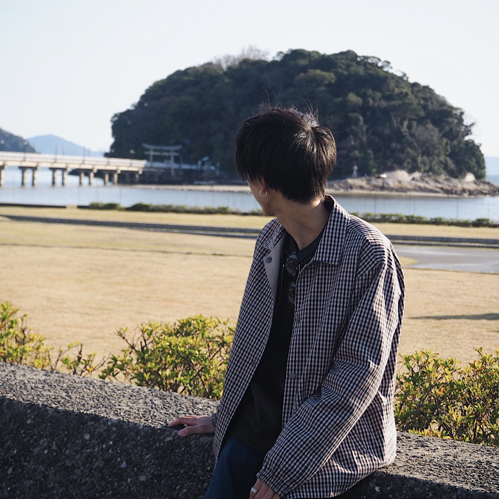
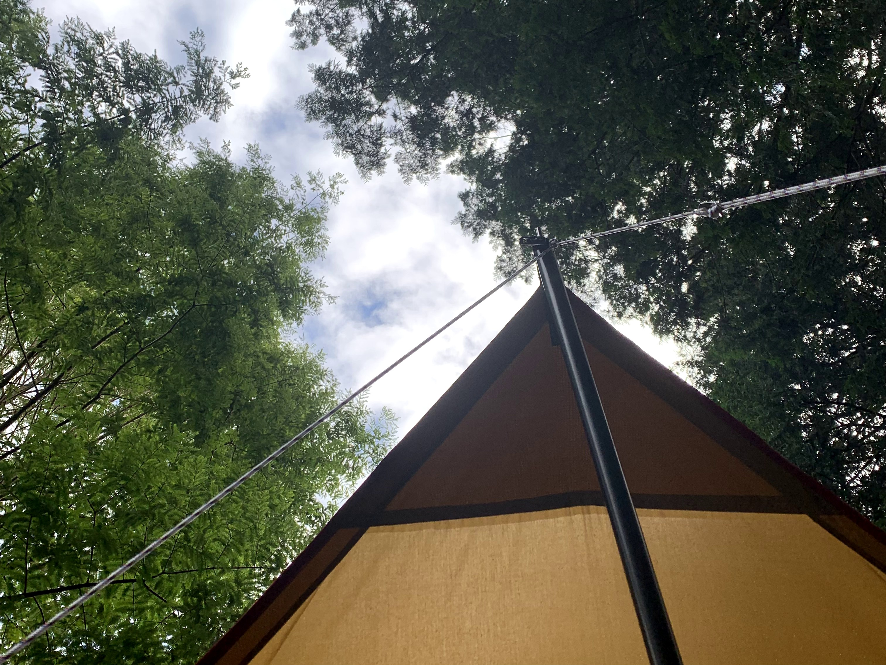
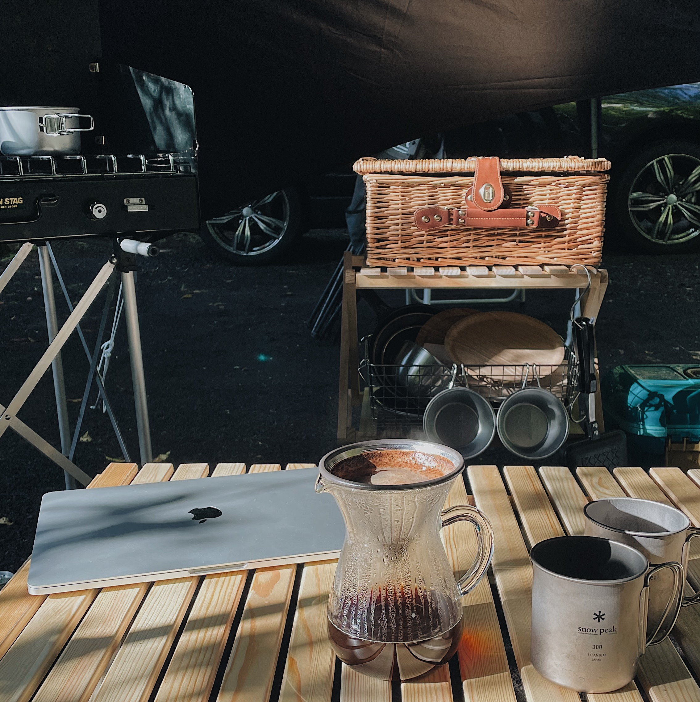
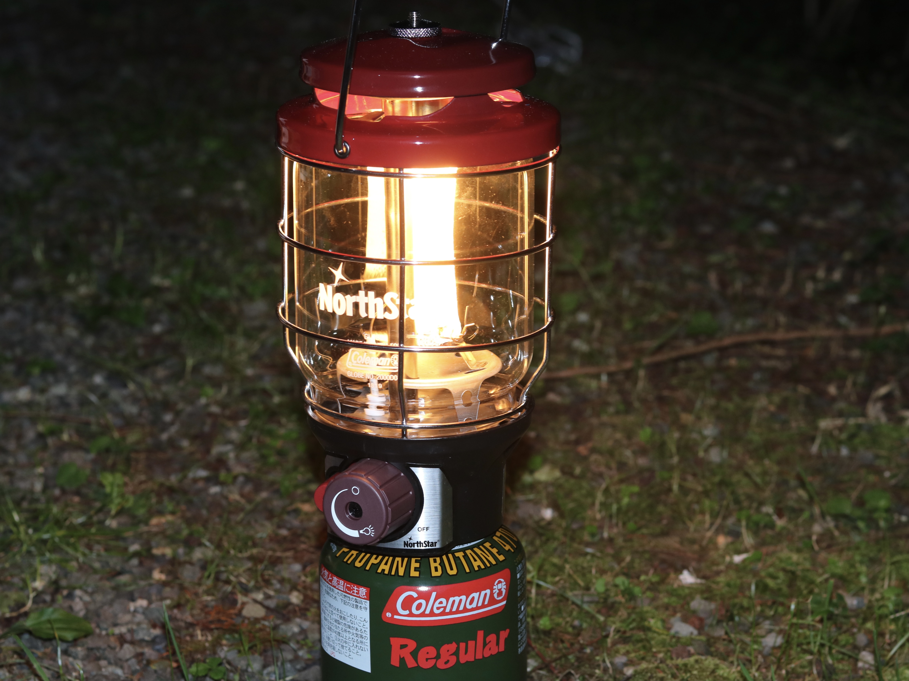
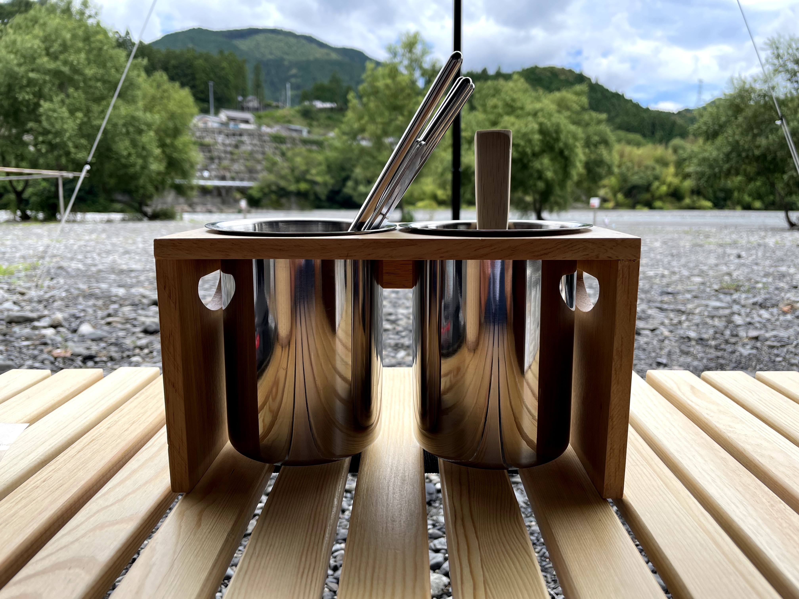
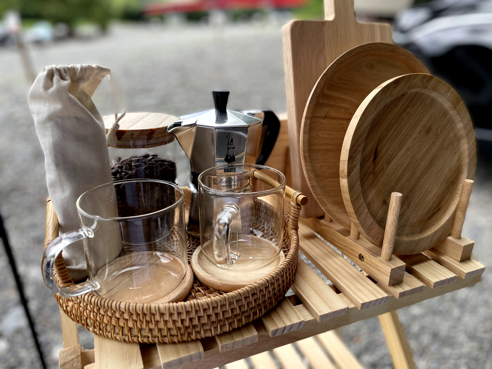
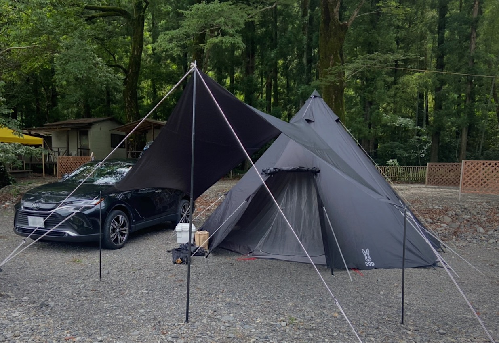

はじめまして、ツカサです。

静岡県在住。キャンプ歴3年目。
最近、キャンプブームが到来してきてキャンプを始める人が増えてきたので、
キャンプ初心者に失敗や挫折で諦めてもらわないように、少しでも参考になればと思い書いてみました。
是非、最後までお付き合い下さい！！
キャンプを始める最短ルート
はじめまして、ツカサです。
静岡県在住。キャンプ歴3年目。
最近、キャンプブームが到来してきてキャンプを始める人が増えてきたので、
キャンプ初心者に失敗や挫折で諦めてもらわないように、少しでも参考になればと思い書いてみました。
是非、最後までお付き合い下さい！！
早速キャンプを始めたいのは山々ですが、勢いで道具を買っても失敗は目に見えています。
BBQをすることで自分の向き不向きが分かります。
それはなにかと言うと、野外でご飯を食べることに抵抗がないか、虫などは平気か、炭に火をつけたり準備は計画性と根気が必要といった事が挙げられます。
ということなので、まずはBBQから始めてみましょう！

デイキャンプとは簡単に訳すと日帰りキャンプのことです。
先ほど紹介したBBQもキャンプ場で行えば同じ類ですね。
キャンプと言えば7月8月の夏をイメージする人が多いですが、暑すぎるので避けた方がいいです。
それと、GWやお盆（夏休み期間）のハイシーズンを避けた涼しい日がオススメです。
キャンプ場は予約が必要です。特に、週末はかなり混み合います。
最近では、人気のキャンプ場になると抽選も行われているみたいです。
大体2,3ヶ月前から予約ができるので、その前に行きたいキャンプ場に目星を付けておくといいですね。
それと、ネット予約ができない所もかなり多く、電話予約やFAXのみという所もあるので確認が必要です。
もちろん予約があるのでキャンセル料金も掛かってきます。
キャンプ場ごとに料金が変わってくるので、ホームページまたは電話で問い合わせするのが良いでしょう。
ただ、キャンプは天候に左右されやすいのでギリギリまでチェックしましょう。

これから紹介するキャンプ道具は必須なので忘れず購入しましょう。
テーブルは折り畳みが必須で、なるべくコンパクトになるものを選びましょう。
チェアはテーブルの高さと合わせると使い勝手がいいです。
ペグとはテントやタープを地面に固定するものです。
ペグには鍛造ペグ、アルミ・スチールペグ、プラスチックペグなど色々な種類がありますが、地面の状況に応じたり固定力が違ってきます。
そこで、初心者にオススメなペグは少し重りはありますが固定力があり汎用性の高い、鍛造ペグをお勧めします。

ランタンにはガスランタン、ガソリンランタン、LEDランタンなどがあります。
まずは安くてUSB充電ができ、持ち運びが簡単なLEDランタンをお勧めします。
キャンプでは一般的な家庭電球の810ルーメンより明るい1000ルーメンあれば十分です。
そちらをメインランタンとして、サブでいくつか持っていると充電切れの際などに役立ちます。
シュラフには封筒型、マミー型、エッグ型があります。
畳んだ時の収納性や使う季節を素材で見極めるのがいいです。
私は1人用でしたので、コンパクトになるマミー型を選びました。
シュラフを持っていれば災害時にも使えて便利なので是非この機会にご購入を。
もしかしたらキャンプにハマらないかもと思う方は、まずは家庭にある布団を持っていってもいいですね。
シュラフの下に敷くマットがないとキャンプ場によっては腰を痛めてしまいます。
マットはとにかく厚めのもであれば間違いないです。
あとは、収納力と人数に合わせえたサイズ感です。
膨らますのが面倒、収納力がなくても楽に使用したい方はコットという折り畳みベッドのようなものを購入するといいです。
クーラーボックスは実際使ってみないと保温機能が分からない事が多いです。
まずはホームセンターなどで持っていく食材に合うサイズを買いましょう。
ここではカセットコンロと書きましたが、もちろん家庭にある物で使って頂いてもいいです。
せっかくなので紹介しておくと、1人用のコンパクトなシングルバーナーや複数人や同時に使いたい方が使うツーバーナーがあります。
バーナーにはガスとガソリンの2種類がありますが、ガスは寒すぎると火がつかない場合があり、寒い時期でも使いたい方はガソリンの方を購入するといいでしょう。

クッカーとは料理の際に使用する調理器具の事です。
通販などでクッカーセットと検索してもらうと山ほど出てきますので、自分にあった値段、色、素材、収納力で選びましょう。



今回、テントを必要な道具に載せなっかたのはキャンプ場でレンタルできる事が多いからです。
テントはキャンプの中でももっとも高い買い物です。
最近はレンタル品が充実したキャンプ場が多いです。
私もそうだったのですが、ハマるか分からないという方はレンタルしてみてはいかがでしょうか？
ちなみに、キャンプ場によってはテーブル、チェア、BBQコンロをレンタルできる所もあります。

TODOリスト